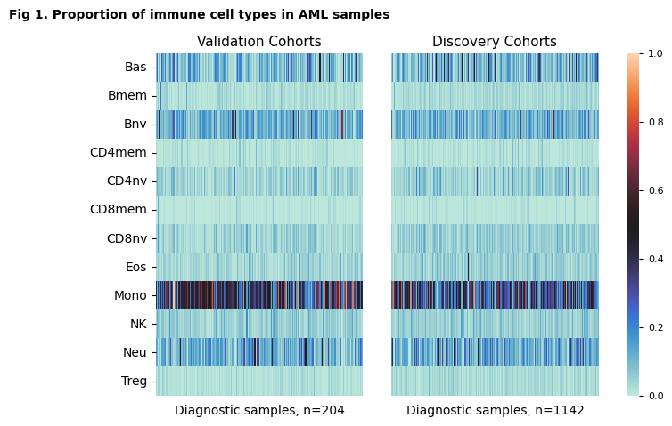
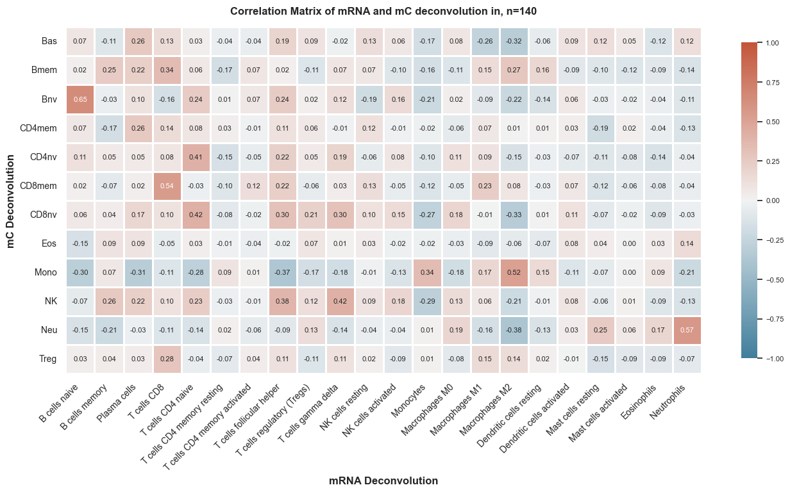

Deconvolution Visualization
Contents
Deconvolution Visualization#
Where the data at?#
input_path = '../Data/Processed_Data/'
output_path = '../Data/Processed_Data/Cell_Deconvolution/'
Load Data#
We will start by loading the mC ARIC deconvolution data.
import pandas as pd
# Read deconvolution results
deconv = pd.read_csv(output_path+'Results_TrainData_ARIC.csv', index_col=0)
deconv_test = pd.read_csv(output_path+'Results_TestData_ARIC.csv', index_col=0)
# Get basic statistics of deconvolution results
round(deconv.T.describe(),2)
| cell types | Bas | Bmem | Bnv | CD4mem | CD4nv | CD8mem | CD8nv | Eos | Mono | NK | Neu | Treg |
|---|---|---|---|---|---|---|---|---|---|---|---|---|
| count | 1142.00 | 1142.00 | 1142.00 | 1142.00 | 1142.00 | 1142.00 | 1142.00 | 1142.00 | 1142.00 | 1142.00 | 1142.00 | 1142.00 |
| mean | 0.12 | 0.03 | 0.11 | 0.01 | 0.05 | 0.01 | 0.06 | 0.05 | 0.33 | 0.05 | 0.14 | 0.03 |
| std | 0.10 | 0.02 | 0.07 | 0.02 | 0.05 | 0.02 | 0.04 | 0.04 | 0.17 | 0.03 | 0.10 | 0.02 |
| min | 0.00 | 0.00 | 0.00 | 0.00 | 0.00 | 0.00 | 0.00 | 0.00 | 0.00 | 0.00 | 0.00 | 0.00 |
| 25% | 0.05 | 0.01 | 0.07 | 0.00 | 0.02 | 0.00 | 0.03 | 0.03 | 0.20 | 0.03 | 0.09 | 0.01 |
| 50% | 0.09 | 0.02 | 0.10 | 0.01 | 0.04 | 0.00 | 0.05 | 0.05 | 0.31 | 0.05 | 0.13 | 0.03 |
| 75% | 0.15 | 0.04 | 0.15 | 0.02 | 0.07 | 0.01 | 0.07 | 0.07 | 0.45 | 0.07 | 0.18 | 0.04 |
| max | 0.74 | 0.16 | 0.74 | 0.15 | 0.57 | 0.20 | 0.37 | 0.63 | 0.90 | 0.29 | 0.66 | 0.11 |
round(deconv_test.T.describe(),2)
| cell types | Bas | Bmem | Bnv | CD4mem | CD4nv | CD8mem | CD8nv | Eos | Mono | NK | Neu | Treg |
|---|---|---|---|---|---|---|---|---|---|---|---|---|
| count | 204.00 | 204.00 | 204.00 | 204.00 | 204.00 | 204.00 | 204.00 | 204.00 | 204.00 | 204.00 | 204.00 | 204.00 |
| mean | 0.10 | 0.02 | 0.12 | 0.01 | 0.04 | 0.01 | 0.04 | 0.04 | 0.42 | 0.05 | 0.13 | 0.02 |
| std | 0.09 | 0.03 | 0.09 | 0.02 | 0.04 | 0.01 | 0.03 | 0.03 | 0.20 | 0.03 | 0.09 | 0.02 |
| min | 0.00 | 0.00 | 0.01 | 0.00 | 0.00 | 0.00 | 0.00 | 0.00 | 0.02 | 0.00 | 0.00 | 0.00 |
| 25% | 0.04 | 0.00 | 0.07 | 0.00 | 0.02 | 0.00 | 0.02 | 0.02 | 0.27 | 0.03 | 0.07 | 0.01 |
| 50% | 0.08 | 0.02 | 0.11 | 0.00 | 0.04 | 0.00 | 0.03 | 0.03 | 0.42 | 0.05 | 0.11 | 0.01 |
| 75% | 0.14 | 0.03 | 0.15 | 0.02 | 0.07 | 0.01 | 0.06 | 0.05 | 0.52 | 0.07 | 0.16 | 0.03 |
| max | 0.45 | 0.23 | 0.70 | 0.10 | 0.21 | 0.12 | 0.15 | 0.15 | 0.93 | 0.18 | 0.55 | 0.08 |
# Import Plotting Functions
from FM_Functions.Data_Visualization import *
deconv.index.name = None
deconv_test.index.name = None
draw_heatmaps(fig_title = 'Proportion of immune cell types in AML samples',
t1='Validation Cohorts', t2= 'Discovery Cohorts',
df1 = deconv_test, df2 = deconv,
save_plot=False, fig_number=1, figsize=(7,5))

Import CIBERSORTx Results#
df = pd.read_csv(output_path+'COG_clinicaldata_ciberscore_FMcleaned.csv')
df_test = pd.read_csv(output_path+'AML02_clinicaldata_ciberscore_FMcleaned.csv',index_col=0).iloc[:,:22]
# break 'Mixture' column by '-' and add to df
df['Patient_ID'] = df['Mixture'].str.split('-', expand=True)[2]
# Set index to Patient ID
df = df.set_index('Patient_ID')
# Remove induction failure patients
df = df[df['Tumor Code'] == '20 - Acute myeloid leukemia (AML)']
# Select columns of interest
cibersortx = df.iloc[:,1:23].join(df[['LSC6','pLSC6_gb']])
y = pd.read_csv(input_path+'y.csv', index_col=0)
# Split data into training and test sets by clinical trial
y_train = y[~y['Clinical Trial'].isin(['AML02','AML08'])]
y_test = y[y['Clinical Trial'].isin(['AML02'])].reset_index().set_index('U133A.Dx.ID')
# Harmonize index of deconvolution results to match cibersortx
y_train2 = y_train.drop(columns=['pLSC6_gb']).join(cibersortx, how='inner', on='Patient_ID')
y_test2 = y_test.join(df_test, how='inner').set_index('index')
# Select columns containing cibersortx results
mRNA_deconv = y_train2.iloc[:,-24:-2]
mRNA_deconv_test = y_test2.iloc[:,-22:]
# Adjust index of deconvolution results to match y_train3
mC_deconv = deconv.T.loc[mRNA_deconv.index]
mC_deconv_test = deconv_test.T.loc[y_test2.index]
# Remove index name
mC_deconv_test.index.name = None
import numpy as np
import pandas as pd
from tqdm import tqdm
def compute_correlation(df1, df2):
"""
Computes the correlation between columns of two dataframes.
Returns a dataframe with the correlation values.
Parameters:
df1 (pandas.DataFrame): First dataframe.
df2 (pandas.DataFrame): Second dataframe.
Returns:
pandas.DataFrame: Dataframe with correlation values.
"""
# Compute the number of columns in each dataframe
n1, n2 = len(df1.columns), len(df2.columns)
# Initialize an empty dataframe to store correlation values
corr_df = pd.DataFrame(index=df1.columns, columns=df2.columns)
# Loop over the columns of each dataframe
for i in tqdm(range(n1)):
col1 = df1.iloc[:, i]
for j in range(n2):
col2 = df2.iloc[:, j]
# Compute the correlation between the two columns
corr = np.corrcoef(col1, col2)[0, 1]
# Store the correlation value in the appropriate position in the output dataframe
corr_df.iloc[i, j] = corr
return corr_df
df_corr = compute_correlation(mC_deconv, mRNA_deconv)
df_corr_test = compute_correlation(mC_deconv_test, mRNA_deconv_test)
0%| | 0/12 [00:00<?, ?it/s]
100%|█████████████████████████████████████████████████████████████████████████████████████████████████████████████████████████████████| 12/12 [00:00<00:00, 308.04it/s]
0%| | 0/12 [00:00<?, ?it/s]
100%|█████████████████████████████████████████████████████████████████████████████████████████████████████████████████████████████████| 12/12 [00:00<00:00, 352.92it/s]
import matplotlib.pyplot as plt
import seaborn as sns
def plot_correlation_matrix(df_corr, num_samples):
"""
Plots a correlation matrix.
Parameters:
------------
df_corr (pandas.DataFrame):Dataframe containing correlation values.
num_samples (int): Number of samples used to compute the correlation matrix.
cohort (str): Name of the cohort used to compute the correlation matrix.
Returns:
------------
None
"""
sns.set_theme(style="white")
# Compute the correlation matrix
corr = df_corr.astype(float)
# Set up the matplotlib figure
f, ax = plt.subplots(figsize=(16, 16))
# Generate a custom diverging colormap
cmap = sns.diverging_palette(230, 20, as_cmap=True)
# Draw the heatmap with the mask and correct aspect ratio
sns.heatmap(corr, cmap=cmap, vmax=1, vmin=-1, center=0, annot=True,
square=True, linewidths=1, cbar_kws={"shrink": .4},
annot_kws={"fontsize":8}, fmt='.2f')
# Adjust colorbar font size
cbar = ax.collections[0].colorbar
cbar.ax.tick_params(labelsize=8)
# Adjust xticks text
plt.xticks(rotation=45, ha='right', fontsize='medium')
# Set plot specs
plt.title(f'Correlation Matrix of mRNA and mC deconvolution in, n={num_samples}',
fontsize='medium', y=1, fontweight='bold', pad=15)
ax.tick_params(axis='both', which='major', labelsize=10)
# Add axis labels
plt.ylabel('mC Deconvolution', fontsize='medium', fontweight='bold')
plt.xlabel('mRNA Deconvolution', fontsize='medium', fontweight='bold')
plot_correlation_matrix(df_corr, num_samples=len(mRNA_deconv))

plot_correlation_matrix(df_corr_test, num_samples=len(mRNA_deconv_test))
